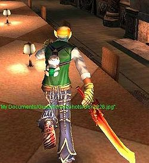
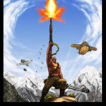
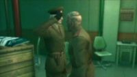
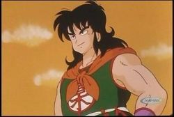

GunZ The Duel
 De: La Frikipedia, la enciclopedia extremadamente seria.
De: La Frikipedia, la enciclopedia extremadamente seria.
De la serie Videojuegos:
GunZ The Duel

promocionando la paz y las armas
| Desarrollado por:
|
Mi tia Maiet
|
| Distribuido por:
|
la misma Julay
|
| Diseñado por:
|
veni, ster
|
| Motor
|
200cc espejo (del mario kart) (ahora enserio, se llama Real Space 2)
|
| Género(s)
|
de disparillos
|
| Fecha de lanzamiento:
|
hasta la estratosfera!
|
| Modos de juego:
|
multijugador pero cada uno en su casa
|
| Requisitos:
|
un pece en el que funcione el paint (el tullo no sirve IP anónima)
|
| Disponible en:
|
Vietnam, Hitlerlandia y Sears
|
| Formatos:
|
se descarga del internete
|
| Edades:
|
de 98,99999999 a 99 años (entre hombres y gays con cuenta de mujer)
|
| Puntuaciones:
|
mu buenas (sarcasmo)
|
Spam de EEUU
GunZ: The Duel (en Coreano: 건즈 더 듀얼 ¿que más da qué coño ponga? nadie sabe coreano...), también conocido como GunZ, es un videojuego del género multijugador masivo para Hasecorp, similar a otros populares juegos de acción en tercera persona, pero incorporando algunas características propias de juegos de rol (del rol del bueno... no del de apuñalar gente y tirar dados... desarrollado por una empresa sur coreana, MAIET Entertainment, es actualmente gratuito aunque está todavía en versión Peta (los sabios dicen que estará en Beta por más de tres milenios, mientras se estudia a fondo el fenómeno de Animation Cancel).
Recientemente, el venister ese de MAIET Entertainment realizó una conferencia con las intenciones de explicar los gráficos de Gunz The Duel, en ella dijo que era una gran mierda, que no sabía por que habían contratado a subnormales y a monos con sida. Con unos vagabundos habría sido suficiente. Aunque se ha desmentido esto, según la NASA y la CERN, a MAIET no le alcanzaba para pagar a unos vagabundos, y los monos con sida y subnormales salen más barato. Por eso MAIET ha hecho unos juegos más, tratando así obtener más ingreso para crear el GunZ 2, pero esta vez con vagabundos.
Características
La acción transcurre en tercera persona, en vez de la clásica primera persona del género. Esto es, en parte para mostrar de manera más llamativa efectos visuales y movimientos gays del personaje. Los jugadores pueden caminar por las paredes (desafiando a la gravedad), realizar complicadas volteretas y rápidos movimientos para tomar impulso a lo Dragon Ball Z (conocido también como dash).
La lógica del juego es conseguir ser el más friki viciado mejor del server, o en su defecto tener un nivel de 99 o más.
Este juego tiene muchas versiones "piratas" que son 40 veces (contadas) mejor que el original, ademas el juego es gratuito pero cuenta con objetos que los frikis y los noobs pueden comprar con el dinero de mami y papi para tener bentaja (o ventaja) sobre los matados que no tienen premiums, ni ropa para vestirse.
Este juego tiene algunas similitudes con el Cáunter Straick y otros juegos de disparo, ps si Matrix y C-S follan, sale GunZ: The Duel. Sin embargo, si esto pasa ignorariamos cosas que no sabemos, como: si follan Matrix y C-S ¿quién es mujer?, y, entonces ¿qué es GunZ?, ¿hombre?, ¿mujer?, ¿gay?, ¿bisexual?, ¿por qué no puedieron ser el Príncipe de Persia y Kaileena los que follaron? ¿por qué en esta pregunta: ¿qué es GunZ?, el signo de interrogación final está en negrita, pero el primero no?.
En el juego son muy frecuentes los conflictos entre los jugadores, especialmente entre los K-Stylers ego's (mirar mas abajo) lo cual termina en discuciones gigantes que se vuelven guerras sangrientas entre paises, planetas, cerdos voladores y lagartijas chupasangre.
El juego tambien cuenta con un motor llamado Real Space 2 el cual tiene graficos del gigantísimo Paint de Hasecorp y realismo de Runescape.
Modos de juego
PvP
- Training: Pues eso training de mierda, nadie lo juega, no sirve para nada, excepto si eres emo y quieres tirarte por un puente o ver si al tirar una granada y sentarte sobre ella, saldras volando fuera del mapa.
- Deathmatch: Todos se caen a hostias entre sí con cualquier cosa que pillen. El más común. A la gente le encanta hacerlo en mapas muy reducidos como "Showerroom" y no... no es para hacer una orgía, si no para liarse a granadazos y basucasos.
- Gladiator Gladiador, todos contra todos al igual que el anterior pero esta vez con uso obligatorio de armas de combate cuerpo a cuerpo, nadie juega este modo, debido a que siempre hay chetos de mierda, jugadores respetables que entrenan durante 27 horas al dia... mucho tiempo para tratar de ser Pro, eso significa, que si eres pro, tienes que andar saltando como un imbecil ninja y apuñalar a todo el indefenso que esté escribiendo o luchando con alguien más. Se permiten todo tipo de armas, mientras no disparen balas, ni bombas, ni rayos laser, se permite, las más comúnes son, espadas, navajas, machetes, manoplas, patadas en los cojones, y alguna que otra arma friki que MAIET decida incorporar.
- Deathmatch + Berserker: Sólo disponible para jugadores intermedios (aquellos de nivel 10 o superior). Es un todos contra todos, donde además existe un jugador capaz de transformarse en Super Saiyajin llamado el Berseker. Éste tiene la ventaja (o bentaja) de quitar el doble de vida a sus enemigos ademas que tiene unas llamas de lo más guay, así que si eres un Otaku de Bleach, métete a jugar aquí ¡y desata tu bankai!.
- Team Deathmatch: Dos equipos, siempre desequilibrados (segun las normas) luchan. Normalmente es el preferido de los K-Styler's Ego's que no pueden matar a nadie en un DeathMatch. En esta modalidad el juego imita perfectamente al CS ya que si mueres puedes pajearte entre ronda y ronda, eso sin incluir que siempre aparece el típico lagger con 999 de ping que no deja que la ronda acabe lo cual te da más tiempo para pajearte.
- Team Deathmatch + Extreme: No hay rondas, se anota un punto por cada jugador del equipo contrario que se mate, gana el equipo que haya conseguido el numero de muertes asignado. Desgraciadamente... en este apenas reapareces mueres porque descubres que todo el maldito equipo contrario ha estado esperandote en tu base por lo que no tendrás tiempo de bueno... tu sabes... así que este modo no es muy aceptado por los maniacos sexuales jugadores, y si logras sacar a esos malditos tipos de tu base, y vas a la suya, te inicia un vote kick por puta "romper las reglas".
- Team Gladiator: Una fusion entre Team Deathmatch y Gladiator (O Rly?). Y si amigo... los combates con espadas son mucho mas largos, perfectos para cumplir tu amor propio.
- Assassination: Asesinato, la ronda la gana el equipo que logre asesinar a un miembro concreto del contrario designado al comienzo de la partida gana, el "objetivo" es facilmente reconocible por llevar un aura roja por ser chavista del equipo rojo, o azul de tanta yerba mana que se metió.
- Duel: En este modo se gana poca EXP, pero es el preferido por los
egos de mierda respetables jugadores profesionales del juego, ya que en las peleas 1 vs 1, pueden usar el SS sensacion sexual Slash Shot, el cual consiste en atraparte y caerte a espadasos y cortarte las venas como todo buen emo, pero para terminarte te caen a perdigonasos para que no sufras mucho, como toda buena persona desearía.
PvE
 En quest podemos ganar ropa muy buena; este de akí es un quester Super Friki que tiene "la combinación perfecta" (nótese el Palmpow
marica rosado de la espalda, las cabeza y guantes dorados del goblin king, los pantalones de Lich y zapatos de Anoeramon) lo malo de ésta ropa es que no dura
ni mierda!! más de una semana y tienes que volverlo a conseguir, lo cual es currao y solo este Friki lo hace.
- Quest: Este, el modo preferido por los N00bs ya que juegan contra mierdecillas (NPCS) que estan tan mal programados que ni saltar pueden
los muy cabrones, aunque a veces se convierten en monstruos gigantes parecidos a un Wombat, pero pasa raras veces si logras combinar 3 objetos de fusión... asi al menos pueden matar algo y ganar un pelin de EXP. En este modo se pueden conseguir objetos y demas cosas increiblemente inútiles como "Goblin Doll", que es lo que definiriamos como un monigote que ocupa espacio en tu inventario. Hay 3 tipos de quests, ya se que salen cuatro numeros... y sí, se contar.
- Mansion: Te encuentras en una mansión Pokemon, es la más facil de todas ya que se juega contra
gremlims de mierda nuestros genéricos amigos, los goblins azules asesinos a sangre fria sedientos de sangre. En este tipo de quest hay 6 niveles de dificultad, y no sé cuántos "Jefes" el Goblin King (pero que su nombre no te confunda, no es afiliado al burger king, ni tampoco es un latin king) y este bichejo es un goblin que de pequeño comio muchas pizzas y se hizo muy grande y gordo y se burlaban de el en la escuela por ser tan gordo asi que decidio comprar un martillo gigante por ebay, matar gente, beber su sangre y dedicar su victoria a Satan. Este Boss por ser tan gordito no representa una gran amenaza, a no ser que te descuides y este se siente sobre ti, tiene un pedo rojo, confundible con unas bolas rojas de fuego que lanza. También existen muchas combinaciones para hacer otros "kings" como el Fake Goblin King (que es un falso más fácil que el normal, y más feo), el Dwarf Goblin King (que es un enano rodeado de otros enanos que están rodeados de otros enanos, y es feo), el Thunder Goblin King (que es amarillo, gigante y está encabronao, lanza truenos, y parece un Pikachu), el Gay Goblin King, el Fat Goblin King, el Chuck Goblin King, el Noob Goblin King, el Shamman Goblin King, el Burger Goblin King, el McGoblin King, el Travesti Goblin King, el Saiyan Goblin King, el Red Blue Yellow Gold Silver Crystal Goblin King, el Baby Goblin King, el Nazi Goblin King, el Jebi Goblin King y el Fake Dwarf Thunder Gay Fat Chuck Noob Shaman Burger Travesti Saiyan Red Blue Yellow Gold SIlver Crystal Baby Nazi Jebi McGoblin King.
- Prision: Te encuentras en una prisión (¿si no lo escribo no te enteras, verdad?), por matar a 5 bebes y 39 mujeres y comer el cuerpo de 93 ancianitas, además de practicar pedonecrofilia con 44 niños y 104 niñas. Este es un nivel intermedio, se trata de escapar a lo Prison Break, y pelear contra los Kobolts que nadie esta muy seguro de que mierda son, algunos dicen que son lobos, otros que son gatos, yo personalmente digo que son lobogatos con cara de ratas wombat azules. Tienen el poder de convertirse en un Conejo azul teletransportante del Turkmenistan y deborar cabezas. Lo mismo, 6 niveles de dificultad y en este caso encontramos dos Jefes. Uno era el Kobolt King (se ve que los programadores mucha imaginación no tenían) que ahora se llama Giant Lizzyman y el otro, Broken Golem, que es un golem de piedra muy "guay", parecido al de Warcraft. Estos 2 bosses son lo que los K-Styleros llaman "TIHHS IS FKGNIG IMNPOSIBLE!!" ya que el Lizzy aparece en una especie de cañeria del water en donde te succiona y jala la correa y el otro tiene simplemente más HP que yo jugando con un cheto combinado armadura de tigre +9.
- Dungeon: Una especie de mapa subterraneo, aqui se pelea contra esqueletillos, son las quests mas fáciles y hay 3 jefes, el primero el "Superion" que no es mas que un esqueleto gigante (bueno, almenos no lo llamaron "Skeleton King") que se cree K-styler porque lleva consigo una estufa gigante y que te persigue como loco por todo el mapa, para preparar una sopa de humano, sin embargo es "matable". Luego esta el "Anoaremon", primohermano de Doraemon, quien tras no tener una bolsa mágica decide deborar humanos vivos. Su poder depende de lo debiluchos que sean los que jueguen contra el asi que puede variar de ser "bah.. este boss es una basurilla" a "no!! no lo pongas que no nos lo vamos a poder pasar", y por ultimo se puede encontrar a "Lich", que es una especie de pájaro gigante que nunca alimentaron y murio de desnutrición, a lo mejor era el tuyo.. no es la gran cosa pero los wombats que van con el son bastante cabrones; no por nada es el boss final.
- Palmpow: Se suponía que aparecería en "Town"; al final, por falta de imaginación, el juego decidió meterlos en los 3 mapas anteriores, siendo el primero "Palmpoa Commander" que aparece en la Mansión y es el más fácil, este jefe aparece con su propio séquito de mariquitillas rosas que lanzan rayos, este es el jefe con menos HP, pero sus ataques no se pueden esquivar y sus mini palmpows te huevean con sus ataques incomprensibles; luego está el "Palmpow" de Prisión que es un cerdo de azul que aparece con varios Palmpoa Commanders, éstos te violan ya que son como preservativos que se te meten por el culo y mueres, la mayoría dice siempre "oye tienes hack???" o "WTF we're gonna dieee!!" antes de jugarlo, ya que es muy difícil; por último está el "Cursed Palmpow" que es un palmpow encabronao con cara de
mierda renegón y que aparece en Dungeon.
Últimamente GunZ está creando nuevas salas de Quest en donde encontraremos otros Bosses más poderosos que los anteriores:
En Town:
- Crazy Grandma (Abuela Loca)
- Drugged Clown (Payaso Drogado)
- Nerdy Hittler (es obvio!)
- Pervert Santa (Papa Noel Pervertido) este solo sale en Snow Town por Navidad.
En Jungle: (Nuevo Mapa)
- Hysterical Panda (Panda Histérico)
- Possessed Monkey (Mono Poseído)
- Dizzy Grizzly (Oso Pardo Mareado)
- Dark Cold Blood Killing BloodDrunk HateBreeder Cat (Gato Oscuro Asesino a Sangre Fría, Borracho de Sangre SiembraOdio)
Estilos de combate
Existen dos grandes estilos o modalidades de lucha que conllevan aprender y desarrollar diferentes habilidades.
- K-Style: Estilo coreano, también llamado "GAY" style, basado en un mayor control de movimiento y velocidad por el empleo de tenedores gigantes. Necesita
ser un viciao sin vida práctica, habilidad y drogas para cambiar rápidamente de arma, empleando casi simultáneamente tenedores y balas de plata, caracterizado por el llamado move cancelling, movimiento que cancela el movimiento del enemigo (sí esto es Move Cancell, chicos, pueden confiar en mí). Las armas que más se usan son Dagas, Francotiradores, Lanza Llamas, Pistolas y Mouse Rebinder. Este estilo, es el mas popular entre los frikis jugadores gays; en pocas palabras, se trata de saltar como imbécil loco de un lado a otro usando el tenedor y luego disparar con la BFK 10000, resulta fácil ya que aprovechan que cada cartucho disparado de la BFK se divide en 10 así que al menos una de ellas le caerá al enemigo, muchas veces los N00bs intentan realizarlo jugando de una forma mas patética de lo normal.
- E-Style: Estilo europeo, enfocado al uso estratégico de armas de fuego rápido, como misiles nucleares, prediciendo los movimientos del contrincante, necesita de puntería y ataque a distancia. (Armas mayormente usadas:Rifles, SMG's, Metralleta, Nuclear Missile Launcher (de Command & Conquer). Comúnmente es gracioso ver cuando un grupo está combatiendo con pistolitas y luego uno de ellos saca su Nuclear Golden Super Armor-clad Emperor Bazooka Rocketlauncher y les saca la mierda a todos. Por eso la mayoría de los que realizan E-Style son totalmente espectaculares y los
frikis K-Styleros les terminan diciendo "Omfg sprayers" o inician un "vote-kick" los muy llorones. Pero los pro de este estilo son mucho más poderosos que los K-Styleros. A este estilo también se lo denomina Lead Shot, y es usado por todos los laggers con todas las armas.
- Chuck Style: Estilo muy poco usado, es una combinación del P-Style, K-Style, E-Style, Sprayer-Style, KSR-Style, y TKR-Style. Sin embargo para poder utilizarlo efectivamente, se debe de ser excelente en los seis estilos. (Armas mayormente usadas: Katana, Metralletas, Escopeta, Lanza Cohetes, Destornilladores, Palos y Cables) Nadie... nadie usa este estilo solo Chuck Norris puede.
Sin embargo otras corrientes han surgido con el tiempo, como el D-Style o Dagger Style (estilo de navajilla, copiado del de los canis), P-Style o Predator Style (estilo depredador, utilizando lanzamisiles).
- D-Style: Estilo austriaco, en el que se usan las dagas, no necesitas ser bueno, pues la daga se defiende de hasta Lanza-Cohetes, y ademas tiene un alcanze de 10 metros, vamos, usa este Estilo.
- Turtle Style: Estilo checoslovaco; defensivo. Es la ténica más poderosa y respetada, un Turtler es alabado por los pro de nivel 99. Se basa en aguardar defendiéndose hasta que el enemigo decida atacar, aplicando un dash como un Tortuninja friki y un ataque cuando el enemigo no está defendiendo. También se puede combinar con un ataque y un dash para escapar. Es el estilo más fiable, hasta cuando un jugador de primera vez lo hace puede compararse con el K-Style. (Armas mayormente usadas: Escopetas y Lanza Cohetes, de ninguna manera se utilizan espadas) Este estilo, se come literalmente a los K-Styleros y ellos amablemente recitan insultos y quejas a modo de alabanza, pues respetan que hayas dominado tan difícil estilo.
Armas
 Esto no pinta na aqui... pero a que queda bien?
En GunZ existe una gran cantidad de armas disponibles, según su radio de acción:
Cuerpo a cuerpo
- Daga: Provoca un daño débil, con un movimiento segundario se puede tumbar al adversario. son las armas de cuerpo a cuerpo más ligeras que existen, pero no pueden bloquear ataques. Los que las llevan tambien suelen ser insultados por los K styleros.. esos putos nazis... si no son rubios de ojos azules... con katanas y escopetas... a lincharlos..
- Katana: El arma de combate más empleada, inflinge un daño aceptable y son bastante rapidas su "massive strike" tiene un radio de golpe bastante grande ademas su ataque segundario (para lanzar a el enemigo) es perfecto para matar K styleros y que luego te insulten.
- Kodachi: Dos ligeras espadas, más cortas que la Katana y de menor alcance, pero considerablemente más rápidas. Sin embargo cada una inflinge un menor daño por lo que se debe dar 2 ataques para notar la diferencia, el peso es mayor.
- Patada Giratoria: Arma esclusiva de Chuck norrys que no inflinge ningun daño.. simplemente mata...
- Espadas Gigantes: Estas armas son unas espadas con un daño muy elevado pero, son muy lentas y pesadas y no se puede bloquear, ni lanzar a tus enemigos con ellas. Estas armas apenas son utilizadas en el juego ya que te hacen moverte como un n00b pero son perfectas en la modalidad "quest" ya que de 2 o 3 golpes te cargas a esos
gremlims de mierda Npcs
Armas de fuego
Para este tipo de armas, hay que tomar en cuenta distintas variables:
- Daño, psh la hp que le quita al enemigo de un ostion
- Velocidad, su candencia de disparoo (ohh a que tengo un vocabulario super guay? candencia uuu)
- Daño crítico, la proporción de daño que se aplica en "health points" (HP, que no significa HijoPuta) frente a "armor points" (AP).
- Control, la puntería coño, la puntería
- Pistola: Son rapidas, tienen un buen control y causan bastante daño, estas armas son poco populares pero bastante efectivas... y si tienes suerte esos nazis de los K styleros no te diran nada por llebarlas
- Revolver: Causan un daño muy grande pero.. piensa un poco.. solo disparan 1 bala y su "candencia de disparo" (pff tio yo voy para oxford eh) es muy baja... y aqui los personajes escalan, vuelan, caminan por las paredes, bloquean balas... te crees que puedes darle a alguien con esas pistolitas?
- SMG: Son bastante rapidas pero su precision es pesima... lo cual es una ventaja (o bentaja) ya que al disparar en un radio muy grande es mas facil darle alguna que otra bala de potra a alguno de los que van revoloteando por ahi. Este arma es muuuy sprayer y es la mejor en Quest.
- Rifle: mas o menos igual que las SMG pero con mejor presicion y control ademas quitan un poco menos y son menos pesadas (asi que te cabra en tu equipo ese vibrador que siempre deseaste).
- Escopeta: Oh tiaa esta arma es lo mas si no sabes usarla no eres nadie... y todo el mundo se reira de ti
- Lanza-misiles: Un arma perfecta para los kamikazes y emos ya que puedes matarte a ti mismo con ella pero tambien es buena para jugadores normales ya que en algunos grupos "amigables" de gente en los deathmatch puedes barrerlos de un par de disparos.
- Ametralladora: el arma tipica preferida por los n00bs, ya que con ellas te puedes poner en una esquina y disparar 100 balas por segundo a ver si le atinas a alguien, hasta que claro se te acaben las balas y salgas con tu espadita para que te den los K-styleros o hasta que venga un
ninja tipo con espada y te caiga a espadasos y te viole en la esquina
Bombas
Las bombas, por supuesto un surtido de copias baratas de bombas del CS
- De fragmentación: Explota infringiendo daño a todo el que se encuentre a un cierto radio. Útil cuando hay grupos amigables de jugadores.
- De Flash: Estas estan muy olvidadas... ya que el flash apenas te afecta en lugares
haviertos abiertos
- De humo: Perfectamente inutil en lugares abiertos ya que apenas saldra el humito de un cigarrillo por lo que el enemigo se reirá de ti.. y ése será un buen momento para atacarle... lo cual las hace más poderosas.
Técnicas
La existencia del move cagelling (Un bug que aprobechan los jugadores para cagarla), ha acabado dandole a este juego características distintivas. Algunos jugadores suelen realizar movimientos especiales usando este "bug". Es a partir del descubrimiento de estas técnicas cuando se comenzó a forjar un nuevo estilo de lucha, el que paso a denominarse K-style al iniciarse en Corea.
Con el tiempo han aparecido nuevas combinaciónes, pero a modo de ejemplo, se indican a continuación algunas de ellas, todas aprobechan fallos del juego
- Wall Slash: Técnica simple para vencer la gravedad y saltar repetidas veces en cualquier pared. Esta tecnica es perfecta para escalar y volar por ahi como un spiderman de pacotilla
- Butterfly: Como su nombre indica esta técnica es perfecta para esos mariquillas que les gusta rebolotear y dar saltitos con su espada. Existen algunas mejoras como el Doble Bf (doble mariposon) y incluso el triple bf (un nivel de mariposeo letal para algunos jugadores)
- Slash Shot hace un movimiento bastante mariquilla que sirve para lanzar un ataque sobre los enemigos doble, o para aumentar la candencia (uff si...) de disparo.
- Half Step o HS: similar al anterior, permite usar dash o impulso mientras se tiene un arma en la mano. Como es necesario dar un corte de espada primero, es posible utilizarlo con el mismo fin pero permitiendo además un movimiento adicional.
- Nota: se recomienda el uso de escopeta o revolver para esta técnica para que no te insulten esos neonazis
- Light Step o LS: técnica sencilla muy similar a una finta, se confunde al enemigo usando un impulso hacia algún lado y luego en el aire se cambia de dirección al lado contrario con el uso de move cagelling.
- Multiple wall-running: Permite correr varias veces por la superficie de las paredes hasta que te choques con otro muro.
- Super Dash: Cuando se efectúa el usuario puede recorrer las áreas a una gran velocidad y puede hacer esto mismo en el aire que resulta como una especie de vuelo (en realidad es una cosa llamada glitch, por ejemplo en el nivel dungeon (no quest) te tiras al vacio, esperas 3 segundos i el das a Dash o impulso muchas veces y lo harás pero luego te matarias... ¿te has tirado al vacio no?).
Términos Que Te Pueden Decir Cuando Juegas
- NOOB: existen dos tipos de noobs
- NOOB NEWBIE: Es cuando entrar en una sala y todos se te vienen encima y tu al disparar tu metralleta te los matas y se quedan tan cabreados contigo,que te dicen noob hasta por el chat
- NOOB PRO: Es cuando eres tan pro que ni siquera Diox con una M-60 te puede tocar, como consecuencia te dicen NOOB
- Muerto: Es cuando te matan sin que te des cuenta por un NOOB NEWBIE, por alguna razón siempre terminan matandolo a él después de su atentado, en resolución, estas muerto
- Pendejo: Esto te lo dicen cuando vas y matas a alguien que esta escribiendo alguna pendejada, y como retribución a lo que le hicistes te dice eso
- Maldito H...D..P...: Esto ha sido considerado el insulto mas efectivo en 5 años(de puro lag y pr0n), te los dicen los que no saben jugar, o son tan malos que se creen pro
- Que Pro Que Eres(Sarcasmo): Esto te lo dicen cuando te eres un creido que no sabe jugar y siempre para insultando a los demas( se aconseja no molestarlos)
Glitchs
Por ahora se conocen unos cuantos:
- Dance Off.- Se trata de moverte y a la vez bailar, para hacerlo has de tener una espada o kodachis, te quedas quieto, haces slash (atacar con la espada) una vez, y luego a shift (defensa) luego le das al 0 (boton de baile) y te mueves. Lo cual sirve para... bueno... para... bah... ya descubriras para que sirve..
- Dance Reload.- Es muy simple, solo has de apretar el boton de baile mientras recargas un arma (no hay que moverse) lo cual realiza un movimiento bastante "gay"
- Elevator.- En qualquier esquina de qualquier nivel (mejor hacerlo en Battle Arena)se necesitan 2 jugadores, uno se pone en frente de la esquina y el otro ha de ponerse encima de él, luego el de abajo ha de empezar a saltar, hasta que empeceis a volar, y caeras pero a veces quedaras flotando en el aire.
- Sexual HIT. Bug que hace que tu personaje se quite los pantalones y se la meta al primero que encuentre, este bug se utiliza mucho para hacer pelis y ponerlas en youtube.
Secuelas y Temporadas
- GunZ The Duel: The Attack of Hackers (El Ataque de los Hackers)
- GunZ The Duel: The Power of Hack (El Poder del Hack)
- GunZ The Duel: Rain of a Thousand Spams (La Lluvia de Mil de Spams)
- GunZ The Duel: Return of Legendary Hacker (El Regreso del Hacker Legendario)
- GunZ The Duel: Hackers Strike Back! (Los Hackers Contratacan)
Expansiones
- GunZ The Duel: Summoning the Lag (Invocando el Lag)
- GunZ The Duel: Quest of Hacker Master (La Búsqueda del Maestro Hacker)
- GunZ The Duel: Hackers Expansion (La Expansión de los Hackers)
- GunZ The Duel: Hittler's Revenge (La Venganza de Hittler)
Otras versiones de GunZ
El gunz tiene muchas versiones originales, claramente inutiles ya que lo divertido es jugarlo en una version pirata (arrr marinero)
- Corea ("KGunZ") - Patrocinado por NetMarble. Como su nombre indica en este gunz esta lleno de "pros" K styleros... aqui el nivel minimo es 140, pero no se como ya que el nivel maximo del juego es 99
- Japón ("JGunZ") - Patrocinado por NetMarble. Muy poco jugado con un nivel de jugadores bastante aceptable.... Cerrado hace poquito
- India ("InGunZ") - (Open beta) Patrocinado por Level Up!. Uno de los mas pesimos ya que tiene muchas "bugs"... hay que aclarar que este gunz lo han cerrado.
- Versión Estadounidense ("ijji GunZ" o "NAGunZ") - Patrocinado por NHN en su página ijji. En este esta el nivel mas bajo, y sus jugadores son los mas estupidos que se pueden ver, este es el sitio perfecto para aprender a jugar a este juego... aunque el juego es una mierda...
Y ahora unas versiones de verdad... piratas, como debe ser... ya que en estas versiones hay mas objetos que en los originales, mas quests, se sube mas rapido, y encima no tienes que ser un pringao por llevar premiums pagando por ellos
- EuroGunz, sin duda el que lo creó tiene severo retrazo mental. El que entre tendrá el lujo de poder hackear, y al entrar a su tienda se desplegará una interminable lista de items REPETIDOS pero de todos los colores, ideales para payasos, es posible que te peguen un solo disparo y caigas muerto, te dan tanta exp que puedes llegar al lvl 99 en un dia y luego no tener nada que hacer mas que escribir /suicide hasta que bajes a lvl 1. Aqui esta lleno de n00bs y algun que otro pro. Pero es divertido descojonarse cuando los n00bs te dicen hacker y te ponen un votekick (sin conseguirlo)
- MPOG Gunz, Antiguo gunz español que lambda, emisand y khayden (nota: el
subnormal amable señor que modifico este articulo no sabe que la gente no tiene ni idea de quien son esos 3) crearon y luego cerron porque nadie le dava unas moneditas para el bingo mantener el servidor. En este gunz estaba la mayor comunidad castellana del gunz... estaba...
- HeroGamers Gunz, (favorito de los Emo que le llaman "EMOgamers, la mayor comunidad EMO") este gunz es el sucesor a MPOG ya que se consiguieron
comprar el guguel nuevas donaciones de organos que usaron para vender(creado por Lambda y Emisand). Está todito en español y se usa un sistema de coins como en la mierda de ijji pero en HeroGamers son gratis. Ya está llegando al tamaño de MPOG alcanzando más de 2000 jugadores nazis al mismo tiempo. En este servidor TODOS son K styleros y super "Pros"
- El resto son los servers noobs, son creados por niños que ni siquiera saben que es una IP, o le pagan a algun hacker para que se los hagan, estos servers no duran mucho ya que los que los crean los ponen en sus pcs
de última generación y con muy buena conexion a internet son faciles de hackear y llegan a un record de 2 jugadores online, (siendo uno el dueño).
Tipos De Jugadores
El noob
Un jugador "nuevo", que juega bastante mierda mal, hay 4 subgéneros:
Suele ir con machine gun y tener una punteria similar a 0 es bastante malo... pero poco problematico.
Es bastante más malo que el E stylero pero este usa escopetas... con punteria 0 por supuesto y encima es un lloron... intentara empezar un /votekick con cualquiera que le mate...
No tiene un estilo de juego definido, suele quedarse con el ataque especial de la espada cargado en algun sitio del mapa donde suelen aparcer vidas o municion, este es bastante problemático en conparacion a los n00bs mencionados anteriormente... y una buena patada en los cojones si estas buscando municion.
Éste es exclusivo del Deathmatch, es el idiota que siempre aparece cuando estás batallando contra otro usuario y ambos están débiles, al final éste noob termina matándolos a ambos sin ningún esfuerzo y sin que tú ni tu adversario se dieran cuenta de su presencia, ...y para colmo se ríe.
El pro
En el gunz the duel la mayoria de los jugadores son pros (exepto en Ijji que son todos unos n00bs)
- Muy dificil de encontrar... son jugadores normalmente frios y poco habladores... no son unos llorones ni marikas como los K styleros y suelen ser muchisimo mejores que ellos. Por lo que son discriminados y llamados sprayers. Aunque algunos K-styleros veteranos lo denominan como "el sprayer legendario"
- Pro K stylero, hay 3 subclases
- Gentil, Tiene honor y es bastante mejor que la mayoria de los K styleros, y no se queja demaciado si lo matas, su numero es bastante bajo y sigue descendiendo...
- Marika, se creen que son los mejores del servidor, si les matan es siempre por lag, hacks, spray o las 3 cosas a la vez. Si los matas te insultaran y iran a por ti hasta matarte entonces estaran media hora riendose de ti... y tu cagandote en ellos. Son los mas comunes... y siempre desprecian a cualquiera que no sea como ellos
- Normalillo, Poco comun y es menos poderoso que los k styleros marikas pero al menos no se queja todo el rato.
Cheto
mas conocido como hacker en este juego. Sí, como todo juego que se precie tiene sus chetos, pero en este en menor medida ya que existen muchos programas anti-cheats para prevenirlos... suele haber mas hackers en servidores oficiales ya que las normas son mas marikillas. Ejemplo: Si usas hacks en Ijji te bannean 1 dia la primera vez 3 dias la segunda y para siempre la tercera... si usas hacks en EuroGunz te bannean 2 años, la IP... Son dificiles de encontrar pero muy mortiferos... ya que pueden, lanzar infinitas granadas de humo en el mapa haciendo que todo se super laggee, tambien pueden ir volando y traspasando paredes mientras te lanzan ataques de cualquier tipo. Lanzarte triquicientos misilazos.. teniendo equipado el cuchillo. Lanzar Meds hacia todas partes... lo cual es bueno... pero cuando vas a cojerlas te lanza 30 misilazos y te mata.
Ideologia nazi K-Stylera

Este Drogata tio es claramente un K-Stylero.
Si te has leido todo lo ahí arriba que se que no lo has hecho vago de mierda ya te habras dado cuenta de como es un k stylero pero... aqui vamos a hablar mas a fondo...
¿Como ser un Pro?
- No hay que tener amigos, ni dentro ni fuera del juego, si hablas con gente te distraeran al jugar
- Hay que sufrir un retraso mental o en su defecto enfadarse por todo
- Hay que ser friki y/o un gamer
- Hay que ser un travesti, porque los personajes chica son mejores (si claro... pillin...)
- Hay que tirarse 25 horas al dia jugando
- Hay que ser emo para que no te importe tener que suicidarte 15 mil veces para poder aprender un movimiento especial
- Hay que tener una conexion a internet como la del pentagono (90 gb) para que no puedan decirte lagger ya que tu ping sera -100 o mas
- Tienes que insultar a todo el mundo, nadie puede darse cuenta de que tienes cerebro
- Tienes que pensar que eres el mejor del servidor... da igual lo mal que juegues... tu eres el mejor
- Tienes que aprenderte estupidas palabras en spanglish para poder insultar mejor a los que te matan
- Por supuesto! no te des una ducha, NUNCA!
Bien... si despues de leer esto sigues queriendo ser "pro"...
ya que como dice el refranero...
Mucho ruido y patada en los cojones
Frases de los K-Styleros
Cuando los K-Styleros no están llorando porque les han matado o tampoco están drogandose, suelen decir cosas algunas coherentes como ésta (muy coherente por cierto...)
Los sprayers nisikiera son una amenaza... por algo son sprayers PORKE NO SABEN JUGAR... si nisikiera saben apuntar como piensas ke te van a matar? y si te matan hermano aki el nub no es el sprayer SINO TU porke no sabes moverte xD...
MAIET creo un juego ekilibrado y me parece ilogico kitarle elementos al jeugo pensando ke esta desekilibrado... solo porke son tan nubs ke no pueden matar a un triste sprayer...
Este mensaje debería haberse titulado "la amenaza fantasma".
Pero, normalmente solo sueltan cosas como estas:
- MAtchServer se ese man full kstyle na sprayers sin premium asi se ve kien es mas pro man !!!!!!!!
- eee la mayoria. d los venezolanos somos Consientes..! y sabemos ke jugamos y ke hacemos!! en cambio los peruanos es solo jugar jugar jugar subir d lvl Quest Quest.. xD pero no es toda la gente y los chilenos.. pro kiero ser pro pro pro PROOOO necesito ser pro!! xD pero no es toda la gente xD
Y se podría seguir perfectamente pero me está entrando una diarrea aguda...
Estos mensajes han sido sacados del Foro Emogamers
No me canso de ver explotarse a este tio...
¿Como Joder a los K stylers?
¿Qué, no quieres ser pro? Pues mejor... y si lo que quieres es amargarles la existencia a los pro sigue estos consejos y veras que rápido te sacan a /votekick de todas las salas.
- Jugando con cuchillo, y encima matandolos así ellos te diran "Dagger n00b" (Usando el botón derecho y luego disparando con metralleta cuando están en el suelo).
- Lanzándolos con el ataque secundario de la espada y disparando cuando estén en suelo. Técnica que hará que ellos respondan "NOOB FLIPER!!!" después de su realización satisfacitoria.
- Simplemente matándolos... da igual cómo... te diran "lagger", "noob", "TKer", "hacker", "lucker", "keser" o cualquier tontería que se les ocurra, negando así su incapacidad de derrotarte.
- Matándolos con la ayuda de tu compañero de equipo... ellos te responderan "NOOBS TEAMERS".
- Matándolos con metralletas... táctica con respuesta de "noob sprayer".
- Ponerte a tirar granadas de flash sin ton ni son...
- Matándolos haciendo K-Style; responderán: "noob lucker" u "OFMG LUCK!!" alagando que no les derrotaste por tu habilidad, sino con suerte.
- Matándolos haciendo P-style; te llamarán "rocket noob", tratando de convercerte que no eres capaz de matarlos limpiamente.
- Matándolos... psh... te dirán cualquier cosa.
- Por supuesto, matandolos haciendo E-Style, a lo que responderán tras su muerte "sprayer", "lucky", "hacker", etc.
- Golpeandoles con un ataque masivo de la espada y luego disparándoles (hasta matarlos), ¿su respuesta? "masive noob".
- Teniendo un ping un pelín más alto de 100: "LAGGER!! FKING NOOB!".
- Jugando en un server oficial matándole (tu con premiums y el sin) "premier noob, get a life.. wasting money in a game". Se sabe que después de eso el tío se compra la tienda de premiums entera.
¿Sabías que...
 Muestra de sus trajes nazis
- ...este articulo
de mierda fue basado en hechos reales y su autora no estaba drogada? (bueno.. en realidad solo un poco)
- ...Gunz: the duel en principio era una copia pirata del final fantasy y no del counter strike?
- ...los que juegan counter son
estúpidos aburridos?
- ...Todos los antivirus bloquean al gunz... racistas de mierda..?
- ...En gunz the duel hay trajes nazis (enserio)?
- ...Los que crearon el juego... no son japos?
- ...tampoco son chinos?
- ...Los bosses del gunz son claramente gays? (Simplemente poned en youtube "Papow")
- ...este articulo fue escrito por una
friki chica con mala leche?
- ...este artículo es ahora escrito y mejorado por un chico? porque la de arriba se
murió?
- ...si pones papow en youtube no te saldra nada relacionado con el gunz?
- ...pero si lo pones en Google imagenes sí?
- ...lo de arriba es mentira?
- ...equiparte bien con premiums en server oficial puede llegar a costarte 10 euros? al mes..
- ...que coño significa papow?
- ...el juego tiene mejores graficos que la wii?
- ...si buscas en youtube "gunz porn" te saldra algo muy divertido?
- ...los
frikis que juegan a este juego tienen manos de mantequilla?
- ...y saben a margarina?
- ...pero huelen a queso?
- ...y parecen de jamón?
- ...en serio has buscado eso en youtube?
- ...la autora de este articulo se tiro 3 horas buscando en algun sitio una foto del dichoso papow? y no la encontro...
- ...se escribía "Palmpow" en vez de "papow? por eso ella
que en pez descanse no lo encontraba?
- ...hay más de 10000 diferentes Goblin Kings?
- ...NPC significa "No Podrás Cagarme"?
- ...o también "Ningún Pendejo me Controla"?
- ...(este espacio está reservado)?
- ...si te mata un n00b te
joderás restarán experiencia?
- ...todos juegan bebiendo Coca-Cola?
- ...me quedé hasta las 5 am editando esta
mierda página?
Enlaces Externos
 Yamcha, decidiendo a que gunz jugar
Web de HeroGamers Toda en español, para ti que no entiendes inglish
Foro de la comunidad HeroGamers
Pagina Web de Eurogunz (en inglish, recien nos enteramos que el que la diseño tiene retrazo mental, no te asustes al verla)
Gunz HeroGamers (si le estamos haciendo publicidad... que mas da ponerla 3 veces?)
Una web educativa (only 12+)
La pagina oficial de los gunz originales mejor no usarlos...
Wikipedia Articulo de la wikipedia que copie para hacer esto...
La pagina de Gunz Ultra de Kaybo
Web de HeroGamers (.o una cuarta...)
|
|
 Shooter Shooter
 Terror Terror
 Velocidad Velocidad
 Rol Rol
 Estrategia Estrategia
 Aventuras Aventuras
 Fight! Fight!
 Clásicos Clásicos
 Deportivos Deportivos
 Aventura gráfica Aventura gráfica
 Novela visual Novela visual
 Personajes de videojuegos Personajes de videojuegos
|
Autor(es):
- Azulejos
- JuanPaBJ16
- Jesus™
- GeorgePro
- Jmx300
- Guntrix
- Emisand
- Dark temptation
- Bladguer
- Roteñito
Frikipedia 2005-2016, Licencia
GFDL 1.2 - Extraído por FrikiLeaks